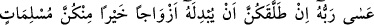
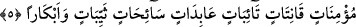

buyuruyor. Madem ki bunlar Cenab-ı Allah’ın ordularıdır, acaba bu ordular kiminle
çarpışıyorlar? Düşmanların arasından herhangi bir şahıs ortaya çıkar çıkmaz birdenbire
dur emriyle karşılaşıyor dedim. Gizliden bir ses bana dedi ki: Şaşırma! Ortada bundan
daha tuhaf olanı var. Ben sordum: Nedir bu tuhaf olan? O ses dedi ki: Yüce Allah’ın Hz.
Âişe ve Hafsa hakkında anlattıklarıdır. Ben sordum: Allah Teâlâ o hikâyede herhangi
bir çarpışma ve katil anlatmıyor. Sadece “Eğer ona karşı birbirinize arka
verirseniz...” buyuruyor. O dedi ki: Bu orduların zikrinden daha çok hayret vericidir.
Şeyh sözüne şöyle devam ediyor: Kafam Allah’ın kendisini, Cebrâil’i, mü’minlerin
sâlihlerini karşısına koyduğu bu büyük azameti öğrenmeye takıldı. Sonra bu olay
hakkında bana bir gerçek haber verildi. Hiç bir şey için bu gerçeği öğrendiğim kadar
sevinmemiştim. Ben bu olaydan kime dayanacağımızı ve o ikisini kimin takviye ettiğini
öğrendim. Yine öğrendim ki Allah Teâlâ yardım konusunda kendisini zikretmemiş
olsaydı, melekler ve mü’minler o iki kadına karşı gelemeyeceklerdi. Yine anladım ki bu
ikisi Allah’ı bilme ilmini elde etmişler, dünyâya nasıl etki edeceklerini öğrenmişler,
kendilerine bu güç verilmiş. Bu işâret ettiklerim gizli kalmış birer bilgi olarak elde
ettiklerimdir. Bundan dolayı yüce Allah’ın bu ihsânına karşı ona şükrettim.
Şeyh Ali Havvâs (k.s.) der ki: Yaratıklar arasında bu iki kadının dayandıkları nesneye
dayanan başka bir yaratık olduğunu zannetmiyorum. Hz. Lût (a.s.) Kur’ân’ın diliyle:
“Keşke benim size karşı (koyacak) bir gücüm olsaydı veya güçlü bir kaleye
sığınabilseydim dedi.” (Hud, 11/80) demişti. Onun yanında o bunu bilmiyordu. Hz.
Âişe (r.anha) ile Hz. Hafsa (r.anha) ise biliyorlardı. O kadınların değerini özellikle Hz.
Âişe ve Hafsa’nın değerini bilmiyordu. Buna dâir çok az şey biliyordu. Çünkü kadınlar
kadın olarak büyük bir güce sâhibdirler. Hatta temiz nefeslerden yaratılmış olan
meleklerin en güçlüleri kadınların nefeslerinden yaratılanlardır. Kadının dünyânın
hükümdarlarından en büyüğünü mücâmaa esnâsında secde eder biçimde kendi üzerine
çekmesi dışında başka hiç bir şerefi olmasaydı, bu gerçek şeref olarak kadına yeterdi.
Çünkü secde hâli namazda kulun halleri arasında en şerefli olanıdır. İşitenlerin
gönüllerine te’sîr edeceğinden korkum olmasaydı ve bu te’sîr o kimseleri Allah’ın
davetinden hicâba; yâni perdelenmelerine sebep olmasaydı, ben bundan acâyip birşey
ortaya çıkarır söylerdim. Fakat bunun ehli vardır. Allah Teâlâ her şeyde bilendir,
herşeyden haberdâr olandır.
5. Eğer o sizi boşarsa Rabbi ona, sizden daha iyi kendini Allah’a veren, inanan,
sebatla itâat eden, tevbe eden, ibâdet eden, oruç tutan, dul ve bâkire eşler
verebilir.